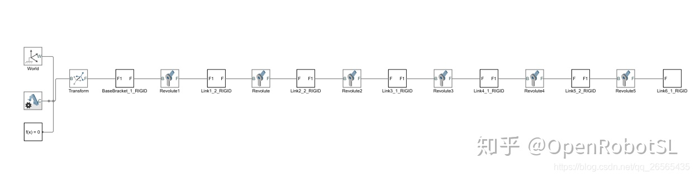
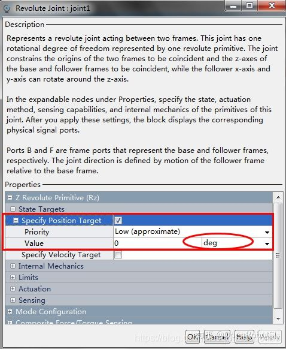
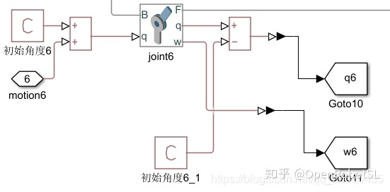

Home
UR构型机械臂正逆解推导
UR机械臂simscape正逆解仿真
工业6轴puam560构型机械臂正逆解推导
代码地址：
https://github.com/OpenRobotSL/UR| i | 扭转角（αi-1） | 杆长（ai-1） | 关节偏距（di） | 关节转角（θi） |
| 1 | 0 | 0 | 89.2 | θ1（0） |
| 2 | 90 | 0 | 0 | θ2(-90) |
| 3 | 0 | -425 | 0 | θ3（0） |
| 4 | 0 | -392 | 109.3 | θ4(-90) |
| 5 | 90 | 0 | 94.75 | θ5（0） |
| 6 | -90 | 0 | 82.5 | θ6（0） |


最近在看相关的课程，把作业做一下，还是蛮有意思的。（课程代码所以涉及版权问题，经过同意后我上传代码）
UR机械臂的物理模型文件是根据SolidWorks插件simscape导出的xml文件，课程直接提供的，博客不便给出，清楚整个建模原理就行。但个人还是觉得urdf文件好理解一些，可以人为控制各个坐标系的方向、位置还有质心的位置，不同机械臂的urdf文件可以自己在SolidWorks中建模然后利用sw2urdf插件直接导出urdf文件，这时就很好控制各个关节坐标系的方向，便于后续正逆运动学问题的解算验证。
xml文件和urdf两者在simscape中的区别可以见上一篇博客Simscape建模笔记。
废话不多说，直接上模型，理解其中的建模逻辑即可~
一般情况下，直接smimport('xxx.xml')之后（如果是urdf文件，则命令为smimport('xxx.urdf')），就会自动在simulink中出现如下simscape模型。模型中各个模块的性质可以参考上一篇博客以及matlab官方文档。

为了后面对模型进行正逆运动学分析，需要将每个joint模块，也就是上图中的Revolute模块中的部分性质进行修改，如下图所示。这是为了实现控制，因此需要对其内部属性进行修改，将Torque（转矩）设置为Automatically Computed(自动计算)，Motion（动力）设置为Provided by Input，这表示动力由输入提供，这意味着这个motion口相当于系统的输入口。除此之外，还需要勾选传感器Position和Velocity的信号。

通过这几个步骤之后，很容易就明白这样做的目的，这次作业只是从位置控制模式上进行建模，因此只是将Actuation致动端的Motion模式改成由输入提供，这个时候通过改变Specify Position Target中Value值的单位也就可以确定Motion输入端的单位，更简单来说就是指Motion端输入多少角度（弧度），这个Revolute Joint就会对应地相对零点位置转动多少角度（弧度）；如果是从力矩控制模式上进行建模，则可以把Actuation致动段的Torque模式改成由输入提供。
另外，可以发现这个Revolute Joint方框框右边除了坐标变换用的F口之外，又多出了q和w口，这两个口就是咱们前面设定的Sensing传感器中Position和Velocity口，可以直接输出joint实时的位置与速度信号，单位对应于前面设置的角度输入信号。


最后需要将每个Joint模块连接成如上图所示，需要注意的地方是simscape在simulink中建模时的信号类型转换为题。一般simulink中常用的信号是这个环境中的模拟值，而此处simscape模型的输入及输出值则需要是物理量信号，存在一个信号类型的问题。简单从上图中也可以进行分辨，物理信号通常连接的是圆圈，引出的是带点儿红色的线，而simulink中常用的模拟量则连接的是箭头，引出的直接是普通黑线，这两个是无法连接到一块儿的，解决办法就是下图。。。找出各自对应的输入输出模块即可。后面也会涉及到PS-simulink和simulink-PS转换模块的使用。


另外有个问题，就是上图中初始角度设定的问题。首先讲一下为啥要有这个初始角度，因为一般机械臂建模时通常是在各个关节变量为0的状态下进行建模（不管是SDH还是MDH下），你就会发现一些机械臂理论建模的初始状态与实际使用中的初始状态不一样，就比如UR机械臂吧，理论建模时初始状态是下图左边这样。。。而实际中你会发现UR臂初始状态是竖直的，也就是下图右边这样。。。所以问题就来了，需要在关节角2和关节角4设置偏置，这也就是上图中初始角Constant设置的原因。。。但是个人认为不需要这么做，只需要将相应Joint中Specify Position Target中Value值改成偏置角即可。。。但是转念一想吧，设置Constant也方便后期修改，甚至在后期将整个系统封装成Mask时也方便设置Mask中的变量，便于用户使用。


每个Joint都设置一下，然后为了方便起见把每个Joint的输出量弄成Goto，然后将所有的位置Goto弄成一个输出口，将所有的速度Goto弄成一个输出口，看起来美观一些，也减少了模型封装输出口的数量，便于后期处理。

OK，全选所有模块，然后Ctrl+G一下，Bingo~ 你就得到如下封装的robot模块了，里面包含了机械臂的物理模型，看起来清爽明亮又美丽~

添加驱动模块，我选用的是课程提供的永磁同步电机模块，便于后期做位置控制用。需要注意的是，上面robot模块接收的motion信号是simscape的物理量信号，因此你的driver也需要输出相应类型的信号，以此来驱动机械臂关节运动。需要添加下面的simulink-PS模块进行信号类型的转换，对应的还有PS-simulink。


先进行正运动学仿真。。。


再进行逆运动学仿真。。。


UR逆解算法全网遍地都是，主要理解一下simulink+simscape机械臂正逆解仿真的过程即可。。。
代码地址
https://github.com/OpenRobotSL/PUMA560表 机器人零位时DH参数表（控制参数取theta=0°）
| 连杆序号i | （连杆长度）（非负数）/mm（沿上一个X 平移Z） | （扭角）(有±)（绕上一个X转Z） | （连杆偏置量）(有±)/mm(沿当前Z平移X) | （转角）(有±) （绕当前Z转X） | 范围 |
| 1 | 0 | 0° | 0 | ±170° | |
| 2 | L6 | -90° | 0 | -90° | -160°～ +80° |
| 3 | L2 | 0 | L7 | -85°～ +90° | |
| 4 | L3 | -90° | L4 | ±360° | |
| 5 | 0 | -90° | 0 | ±120° | |
| 6 | 0 | 90° | 0 | theta6 | ±360° |
| 7（默认工具）T | 0 | 0 | L5 | 90° | -90°~-90° |
| 8（自定义tool） | 0 | 0 | ToolPara1 | 90 |


可解算出theta6
======================================================================
我的测试结果及程序
下面是我测试的代码：